北海道 (45)2010年8月2日 難易度：★★
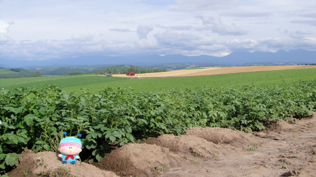
北海道の中心に位置する美瑛のじゃがいも畑にて。（態度が）ビッグなムルモが小さく見えるほど、北の大地のスケールは大きすぎました。どの方角を向いても雄大な景色が広がる北海道ですが、それを写真で表現するのはすごく難しいですね。
「緑の絨毯の上でお昼寝するでしゅ」
青森県 (12)2007年4月27日 難易度：★★★
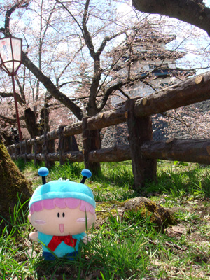 桜の季節に弘前公園を訪れました。残念ながら桜は咲き始め状態で色づいていませんが、桜に囲まれたお城という光景は弘前ならではで風情たっぷりです。GW前なのにとにかく人が多かったです。
「ボクの魔法で桜を咲かせてみせましゅ」
岩手県 (13)2007年4月27日 難易度：★★
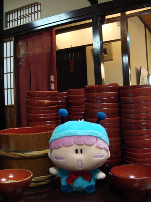 岩手といったらわんこそば！盛岡駅近くの東屋本店にてわんこそばに挑戦しました。私の記録は９１杯、自分の限界がよく分かりました。今度は朝から何も食べない状態でチャレンジしてみたいですね。
「次はわんこマシュマロに挑戦でしゅ」
宮城県 (39)2009年5月30日 難易度：★★
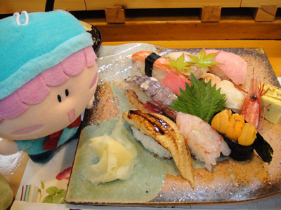 松島のお隣、塩釜の仁王寿司さんにて、特上寿司(2,850円)をいただきました。さすが国内屈指の漁港を誇るだけあって、新鮮過ぎるお寿司はまさにグルメです。そしてこのカラフルな写真を見るたびにまた食べたくなってきます(^^)。
「お魚しゃんがたくさん！」
秋田県 (8)2007年2月4日 難易度：★★
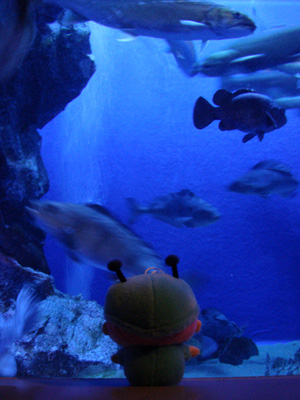 男鹿半島の先っぽにある男鹿水族館GAOへ行ってきました。冬の日本海は波のしぶきが数メートルにも及ぶ荒波ですが、この水族館では日本海に生息する様々な海水魚がのんびり優雅に泳いでいます。秋田名物のハタハタも美味しそうに泳いでいました。
「お魚しゃんが集まってきたでしゅ」
山形県 (24)2008年1月3日 難易度：★★★★
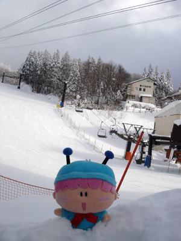 山形蔵王温泉スキー場にて撮影しました。山の上の方へ行けば有名な樹氷を見ることが出来ますが、ムルモはリフトには乗らずに雪遊びしている方が楽しいようです。周りにはスキー・スノボー客がたくさんいて、焦るあまり写真が傾いてしまいました。
「雪合戦を始めるでしゅ！」
福島県 (10)2007年3月19日 難易度：★★
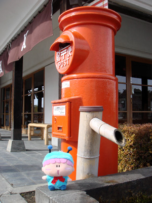 ラーメンと蔵の街・喜多方へ行ってきました。「蔵の里」にて、蔵に備え付けの郵便ポストをバックに撮影。今では滅多に見ることのできないこの郵便ポストの光景は、まるで昭和の時代にタイムスリップしたかのようです。
「妖精界でも見たことがありましゅよ」
茨城県 (25)2008年2月3日 難易度：★★
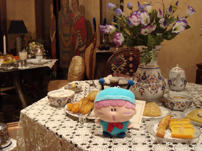 水戸市内の「お菓子博物館」にて。博物館はまさにお菓子の世界で、日本や世界のお菓子の歴史やコレクションを楽しめました。
「見てるだけじゃつまらないでしゅ！」
栃木県 (4)2006年11月5日 難易度：★★★
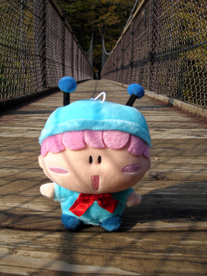 那須塩原の観光地、回顧（みかえり）の吊り橋で撮影。吊り橋からは美しい箒川渓谷が見渡せます。ちょうど紅葉シーズンでもあり、観光客が大勢いる中での撮影でした。吊り橋もぐらぐら揺れるので、ムルモがよく転がります。
「高い場所はへっちゃらでしゅ」
群馬県 (26)2008年3月2日 難易度：★★★★
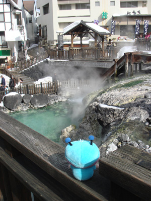 草津温泉の中心地にある湯畑を訪れました。温泉のお湯が滝のように流れて、もくもくと湯気が上る光景は圧巻の一言！そして観光客で大混雑！ムルモが硫黄臭くないかな…。
「ヤシチしゃんに教えてあげるでしゅ」
埼玉県 (14)2007年5月20日 難易度：★★
滑川町の森林公園で撮影しました。東京のお隣とは思えないくらいの豊富な自然に癒されます。ハーブガーデンでは妖精サイズのいちご（エゾノヘビイチゴ）が真っ赤な実をならしていました。
「ひとつくらいなら食べてもいいでしゅよね？」
千葉県 (9)2007年2月18日 難易度：★★★★
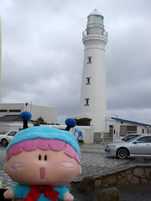 千葉県の先っぽ、犬吠埼にて。明治に建てられたいかにも灯台と言えるこの犬吠埼灯台は「世界の歴史的灯台100選」に選ばれた灯台です。天気がものすごく悪くて、強風でムルモが吹き飛ばされそうになるたびに冷や汗が出ました。
「こんな強風、聞いてないでしゅ…」
東京都 (37)2008年12月6日 難易度：★★★★★
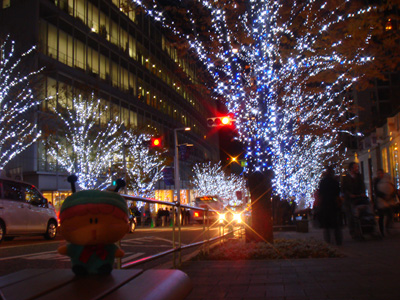 六本木ヒルズのブランドショップが並ぶ通りにて。たくさんの買い物客とイルミネーションの華やかさが織りなす景色はこれぞ東京の景色ですね。妖精界のヒルズ族であるムルモも、この高級な景色にご満悦の様子です。
「お城のライトアップをお父たまにお願いするでしゅ」
神奈川県 (23)2007年10月9日 難易度：★★★★
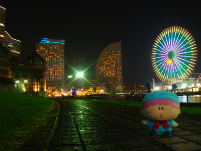 横浜の新しい観光スポット、みなとみらいの日本丸メモリアルパークからの夜景です。人工的でにぎやかな夜景はとても情熱的！携帯カメラのライトの光を送ることで、暗い公園でもモデルのムルモのうれしそうな表情もしっかり撮れました。
「夜のお散歩はうきうきするでしゅ」
新潟県 (35)2008年10月27日 難易度：★★★
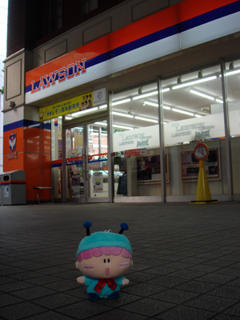 新潟駅近くでJリーグ「アルビレックス新潟」色のローソンを発見！新潟限定のお店の前で早速記念撮影です。もともとプロ野球チームの存在しなかった新潟は、街全体がアルビレックスを応援していて盛り上がっていました。
「マシュマロを買いに行ってくるでしゅ」
富山県 (28)2008年4月28日 難易度：★★★
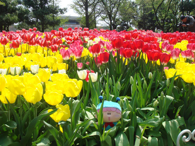 砺波市の春限定のイベント「となみチューリップフェア」へ行ってきました。チューリップは富山県の花、広大な敷地に450品種100万本もの鮮やかなチューリップが植えられていて、キュートなムルモもここでは脇役ですね。
「お花の匂いがすごくするでしゅ」
石川県 (46)2011年1月23日 難易度：★
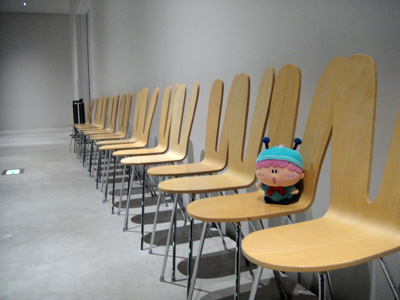 金沢21世紀美術館にて。現代アートがいろいろ鑑賞できる美術館ですが、理解するのが難しい作品ばかり。私にはむしろ、交流ゾーンの休憩用の椅子の方に惹かれました。建築家SANAAによるウサギの耳のような椅子がずらっと並ぶ光景は、ムルモにぴったりなアートと言えますね。
「パピィがたくさんいるみたいでしゅ～っ」
福井県 (30)2008年7月13日 難易度：★
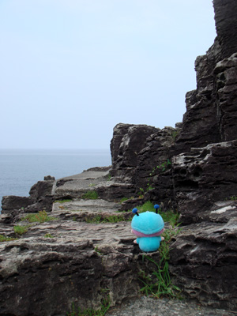 越前海岸の鉾島を訪れました。高さ５０メートルという自然が作り出した断崖は近くで見ても迫力があり、桃太郎の鬼ヶ島みたいな雰囲気を感じますね。ムルモも気分はすっかりムモ太郎です。
「お供がいなくてもへっちゃらでしゅ」
山梨県 (15)2007年6月16日 難易度：★★★
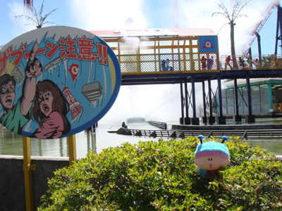 絶叫系アトラクションで有名な富士急ハイランドにて。全身びしょ濡れを体験できる「グレート・ザブーン」の着水の瞬間です。とにかく水しぶきがすごい！そして数秒後、ムルモにも水滴の雨が…。
「ほえ～っ！逃げるでしゅ！！」
長野県 (47)2011年5月3日 難易度：★★★
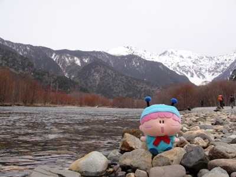 長野県の上高地がムルモの旅のゴールとなります。ベストシーズンからちょっと外れていますが、それでも自然の美しい景色ときれいな空気に圧倒されっぱなし。遠くの焼岳と大正池をバックに贅沢な芸術写真で旅を締めくくります。
「もっといろんな場所へ行きたいでしゅ」
岐阜県 (6)2006年11月23日 難易度：★★
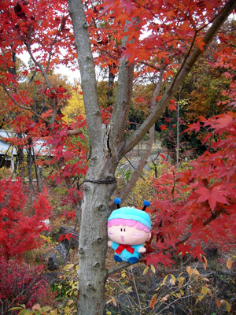 日本昭和村で撮影しました。名物のレトロな建物は通行人が多かったので、ちょうど色づいていた紅葉をバックに撮影。楓の赤がとても鮮やかでした。
「ボクの芸術魂をくすぐるでしゅ」
静岡県 (7)2007年1月4日 難易度：★
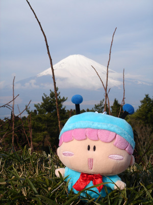 御殿場の峠道にて富士山をバックに撮影しました。年の初めに富士山は縁起がよく、ムルモもうれしそう。ちなみにムルモの３０センチ後ろは崖になっていて、落ちるとそのままふもとの町まで転がっていきそうでした。
「てっぺんはマシュマロ色でしゅね」
愛知県 (19)2007年8月25日 難易度：★★
 久屋大通のオアシス２１の３階「水の宇宙船」よりテレビ塔をバックに撮影しました。都会のど真ん中で楽しめるオアシス（噴水）を見ていると、最高気温３５度の暑さの中にいてもその暑さを忘れさせてくれそうです。
久屋大通のオアシス２１の３階「水の宇宙船」よりテレビ塔をバックに撮影しました。都会のど真ん中で楽しめるオアシス（噴水）を見ていると、最高気温３５度の暑さの中にいてもその暑さを忘れさせてくれそうです。
「オアシスで泳いでみたいでしゅ～っ」
三重県 (20)2007年8月26日 難易度：★★
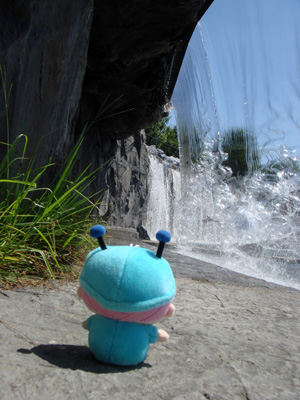 四日市港ポートビルの近くにある霞港公園にて。無機質な港の中に緑豊かな素敵な公園がありました。高さ３メートルほどの滝の裏側を歩けるのは子供たちだけでなく妖精たちにも大人気。水しぶきに気を取られて足を滑らさないようご注意を。
「ここを通るんでしゅか？」
滋賀県 (27)2008年3月8日 難易度：★★
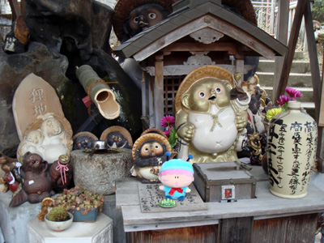 滋賀名物の信楽焼を撮影に、「信楽陶苑たぬき村」を訪れました。まわりはたぬきだらけ！奥の方にあった「狸地蔵尊」にて、たぬきからの御利益をゲットです。
「たぬきの神様もボクの味方でしゅ」
京都府 (32)2008年8月24日 難易度：★★★
 祇園の巽橋にて、人のいないタイミングを狙って撮影しました。整然とした石畳と奥の町家がいかにも京都らしいです。橋の上にたたずむ京風ムルモ、この後舞妓の妖精が奥から歩いてきてムルモを取り囲みそうな気がします。
祇園の巽橋にて、人のいないタイミングを狙って撮影しました。整然とした石畳と奥の町家がいかにも京都らしいです。橋の上にたたずむ京風ムルモ、この後舞妓の妖精が奥から歩いてきてムルモを取り囲みそうな気がします。
「ボクが主役の時代劇を撮影するでしゅ」
大阪府 (2)2006年9月25日 難易度：★★★★ （撮影：アコモさん）
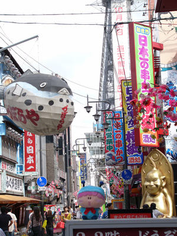 づぼらやのフグやビリケンさん、通天閣をバックにした難波の絶景スポットで撮影。まさに大阪ならではの絶景ですね。朝の早い時間でも通行人が多かったです。
「ほえ～っ、妖精界より派手でしゅね」
兵庫県 (11)2007年4月21日 難易度：★★★
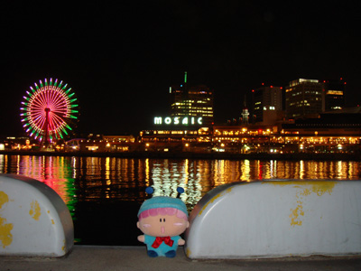 神戸のメリケンパークから見えるモザイクの夜景です。きらめく夜景はとっても幻想的ですが、ムルモの１０センチ後ろは海…撮影する私はドキドキでした。
「極上の夜景を独り占めでしゅ」
奈良県 (38)2009年5月2日 難易度：★★★
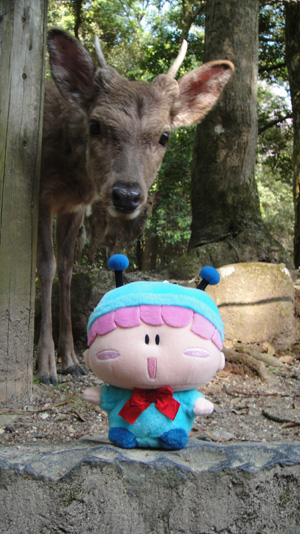 奈良公園の鹿をバックに撮影。奈良公園の鹿は人間に慣れているからかまったく怯えることもなく、逆に興味津々でムルモにさらに近づいてきます。撮影中も、ムルモまであと１０センチくらいのところまで鹿が近づいてきてびっくりしました。危ない！ムルモ！！
「鹿しゃんと一緒に記念撮影でしゅ」
和歌山県 (31)2008年8月4日 難易度：★★★★
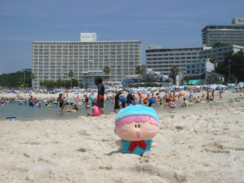 関西のリゾート地、南紀白浜へ行ってきました。青い海と白い砂で有名な白良浜は夏休みシーズンは海水浴客でさらに大人気。この後ムルモも水着＆浮き輪スタイルに着替えたのは言うまでもありません。
「ボクもいっぱい泳ぐでしゅよ」
鳥取県 (3)2006年9月26日 難易度：★★★
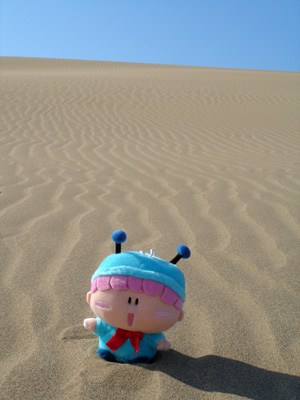 鳥取と言えば鳥取砂丘ですね。砂が深くて、歩くのが大変…。ムルモも埋まってしまいそうでした。この砂の山を越えると日本海が見えます。撮影するときは強風でぬいぐるみが海に転落しないようご注意を。
「もう歩けないでしゅ…」
島根県 (29)2008年5月25日 難易度：★★
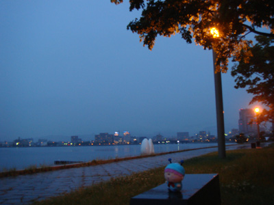 松江市白潟公園から宍道湖を撮影。晴れていれば鮮やかなオレンジ色の夕日が見られるのですが今日はあいにくの雨…。夕日を眺めるためのベンチはすべて貸し切り状態でした。
「今回は下見でしゅ。また来るでしゅ」
岡山県 (41)2009年8月1日 難易度：★★
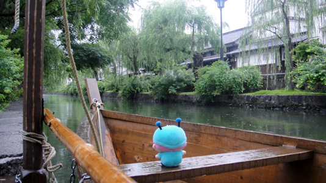
倉敷の美観地区へ行ってきました。雨とはいえ、古民家が建ち並ぶ風景は、時の流れが止まったかのように錯覚してしまいます。ムルモの方は景色よりも船に夢中ではありますけど。
「いざ出発進行でしゅ～っ」
広島県 (36)2008年11月9日 難易度：★★
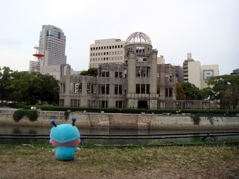 原爆ドームは世界的に最も知名度の高い日本の建造物だと思います。訪れる多くの人が戦争の悲惨さを感じ、そして世界の平和を願うことでしょう。ムルモの小さな胸にもその思いが刻まれました。
「ボクが妖精界を平和にしてみせましゅよ」
山口県 (1)2005年1月9日 難易度：★
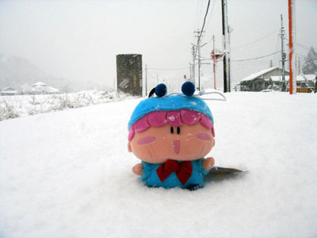 JR山口線の篠目駅で撮影しました。ドラマ『砂の器』の親子の別れのシーンのロケ地で使われた篠目駅、訪れたときは大雪でした。
「早くあったかいマシュマロ鍋を食べたいでしゅ」
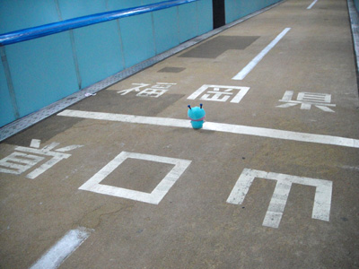 上の写真のムルモぬいぐるみは初期版！？ その後ヤフオクで手に入れた現役のムルモぬいぐるみを連れて、2010年3月13日に再度山口県を訪れました。下関から関門トンネル（人道）をくぐるともうすぐ福岡県！ ムルモはまさに今、海底の真下にいます。
徳島県 (17)2007年7月8日 難易度：★★★
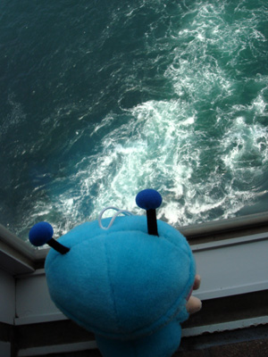 大鳴門橋の下の渦の道にて。高さ４５メートルから世界の三大潮流とも呼ばれる鳴門の渦潮を見下ろすことができます。残念ながらこの日はあまり渦巻いていませんでした…。高所恐怖症の人には厳しい場所かもしれませんね。
「お兄たまは恐がりそうでしゅね」
香川県 (16)2007年7月7日 難易度：★★★★
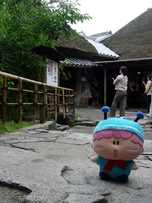 屋島の四国村内にある讃岐うどん「わら屋」へ行ってきました。ガイドブックにも載るほどの有名店で、お客さんが絶えることはありません。かやぶき屋根のお店も雰囲気が出ています。
「うどんもおつゆもとーってもおいしかったでしゅ！」
愛媛県 (34)2008年9月8日 難易度：★★★★★
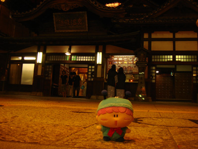 『坊ちゃん』の舞台でもあり、『千と千尋の神隠し』の湯屋のモデルにもなったと言われる、道後温泉本館を訪れました。歴史ある風変わりなこの温泉には夜もいろんな旅館からわざわざ浸かりに来るお客さんが絶えず、湯船はムルモの貸し切りにはなりませんでした。
「お風呂上がりはミルクで一杯やるでしゅ」
高知県 (33)2008年9月7日 難易度：★★
 高知駅前の「はりまや橋」にて。”日本三大がっかり名所”の汚名を着せられた名所ではありますが、その口コミが新たなお客さんを呼んでいるような気がします。なおこの橋は1998年に復元されたもので、本来の橋は別の場所に展示されているとか…。
高知駅前の「はりまや橋」にて。”日本三大がっかり名所”の汚名を着せられた名所ではありますが、その口コミが新たなお客さんを呼んでいるような気がします。なおこの橋は1998年に復元されたもので、本来の橋は別の場所に展示されているとか…。
「夜のライトアップはきれいでしゅよ」
福岡県 (5)2006年11月18日 難易度：★★★★
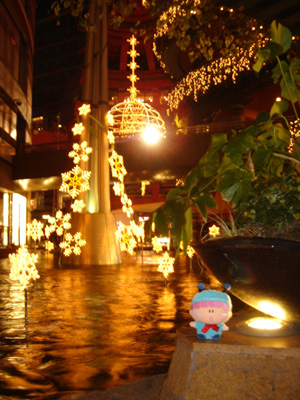 キャナルシティ博多にて。イルミネーションが織りなす幻想的な夜の光景は、カップルのデートスポットとしても有名です。写真は夜１０時の撮影ですが、昼はまた違った雰囲気になると思います。
「パピィにも見せてあげたいでしゅね」
佐賀県 (18)2007年8月11日 難易度：★★★
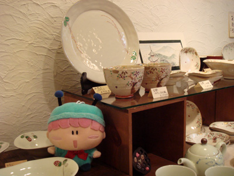 有田駅前のお店「ギャラリー器響」にて。お客さんのデザインに基づいて器を作る新しいスタイルのお店で、お店にはかわいい陶器がたくさん！店長さんに許可をいただいて撮影しました。
「ボクにぴったりの陶器ばかりでしゅ」
長崎県 (40)2009年7月5日 難易度：★★
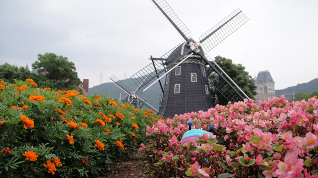
佐世保市ハウステンボス町にあるハウステンボスへ行ってきました。入場すると佐世保とはまた違った光景が…再現された中世ヨーロッパの街並みや風車は王族のムルモとよく似合いますね。とにかく写真撮影のスポットが多くて楽しかったです。
「お花畑でかくれんぼでしゅ～」
熊本県 (21)2007年9月12日 難易度：★
 南阿蘇の草千里ヶ浜を訪れました。見渡す限り緑の牧草地、まさにスケールが違います。観光客は多いけれど、広さゆえぬいぐるみの存在に誰も気がつくことはありません。
南阿蘇の草千里ヶ浜を訪れました。見渡す限り緑の牧草地、まさにスケールが違います。観光客は多いけれど、広さゆえぬいぐるみの存在に誰も気がつくことはありません。
「お兄たまと鬼ごっこしたいでしゅ」
大分県 (44)2010年4月25日 難易度：★★
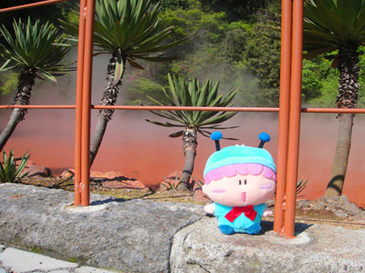 別府の定番とも言える「地獄めぐり」を行いました。その中でもこの「血の池地獄」はインパクト大ですね。実際には熱泥が赤く見せているのですが、遠目で見るとやっぱり血の池です。なお私のデジカメではあまり赤くならないので、Photoshopで赤を強めに補正してます(^^;。
「不気味でこわいでしゅ・・・」
宮崎県 (43)2009年11月14日 難易度：★★
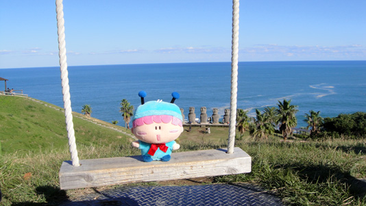
完全復刻モアイで有名な「サンメッセ日南」にて。このモアイたちはイースター島から特別許可を受けて作られたとか。そのモアイたちを見下ろす丘にはその名も絶景ブランコが架かっていて、青い空・海・モアイ(?)の贅沢な景色をバックに記念撮影しました。
「お兄たまのようにブランコから落ちたりしないでしゅよ」
鹿児島県 (22)2007年9月14日 難易度：★★★
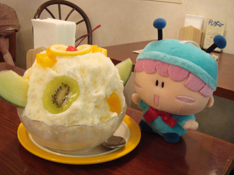 鹿児島名物といったら「天文館むじゃき」というお店を本場とするかき氷『白熊』も有名ですね。18種類もある中、ヨーグルト白熊を注文してみました。フルーツが乗ったボリュームのあるかき氷にムルモもびっくり！
「頭がキンキンするでしゅ～っ」
沖縄県 (42)2009年9月5日 難易度：★
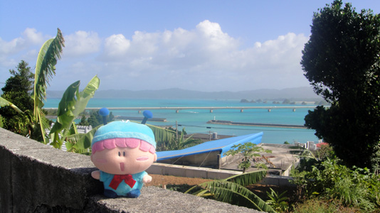
沖縄の海にかかる古宇利大橋をバックに撮影しました。まさに南国を思わせる沖縄の青い海を見れて私はかなり感動…。手前の植物も南国らしくていいですね。暖かい海には生きた珊瑚や貝もたくさんいて、本州では見られないいろいろな物を見ることができました。
「パピィのやつにも教えてあげましゅかね」
(2011/5/4)